Les SMA pour modéliser les pratiques viticoles avec la plateforme GAMA
Par Etienne Delay et Patrick Taillandier MAPS-10 -- 22 juin 2017 -- Olérons
Flash-back
Définitions des problématiques et des terrains d'études
Le contexte général
- La viticulture de montagne et de fortes pentes ne fait pas l'objet d'études spécifiques
- La tendance est à l'abandon des pentes au profit d'une viticulture mécanisée en plaine
Réfléchir et explorer les influences des spécificitées liées à la pente dans les pratiques socio-spatiales viticoles
Les spécificités de la viticulture de pentes
- Des terrains souvent pauvres, rapidement reconnus comme qualitatifs
- Des conditions de travail difficiles, qui interdisent la mécanisation
- Un accès aux parcelles complexes et des distances temps accentuées par la pente
- Une structuration sociale particulière qui fait la part belle aux petits exploitants et au système coopératif
Les problématiques
Explorer les interactions société ⇔ environnement pour proposer une lecture et une compréhension renouvellées du fonctionnement de la viticulture de pente
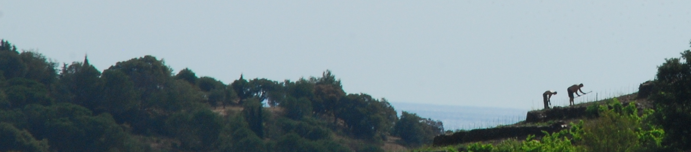Les terrains d'études : localisation

Les terrains d'études : description

Banyuls-sur-mer
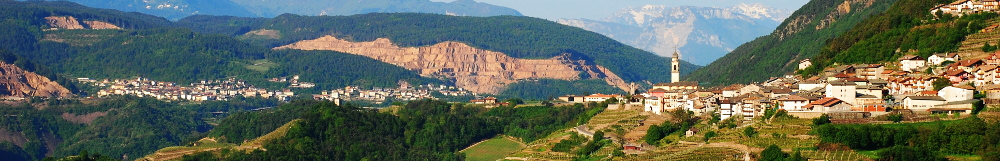La val di Cembra
Overview

Lobesias botrana et la viticultures
La viticulture dans le monde
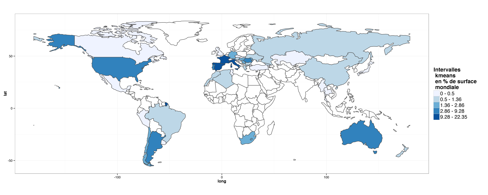L. bortrana est considérées comme le principal ravageurs de la vigne cultivée depuis la crise du phylloxera (Roehrich et al. 2000)
Lobesias botrana ?
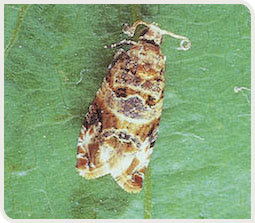- L. bortrana ravageur polyphage (Tasin et al. 2006),
- la femelle libère des phéromones (Briand 2009)
- C'est une espèce thermo-sensible
Où

L'AOC Banyuls - Collioure
Comment
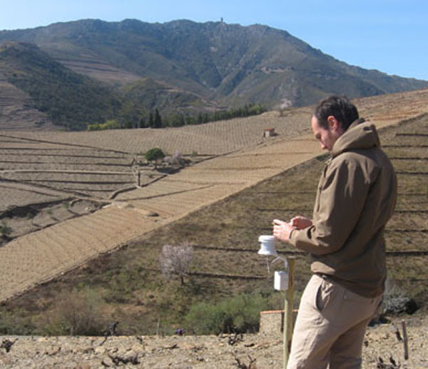- Depuis 1999, un suivi de l’infestation sur des parcelles témoins (GDA)
- Depuis 2012, 11 capteurs de température effectuant des relevés toutes les 10 minutes (TERVICLIM)
Comment
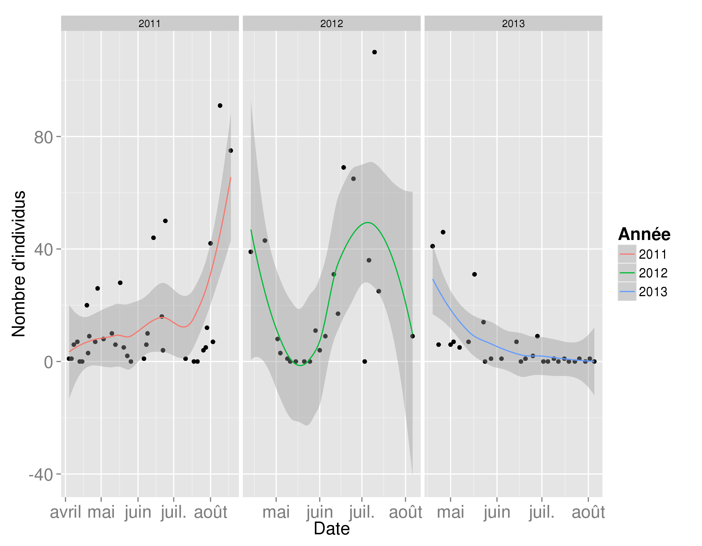3 années de comptage dane une parcelle témoin
Les questions
- La confusion sexuelle a-t-elle un impact sur les populations d’eudémis simulées ?
- L’espace est-il un facteur influençant la dynamique de population du parasite ?
- Quelles sont les stratégies de lutte intégrée optimale pour lutter contre ce microlépidoptère ?
- Quelles sont les conséquences d’un passager clandestin dans la lutte intégrée ?
Un modèle, deux implementations
Implémentation avec Netlogo
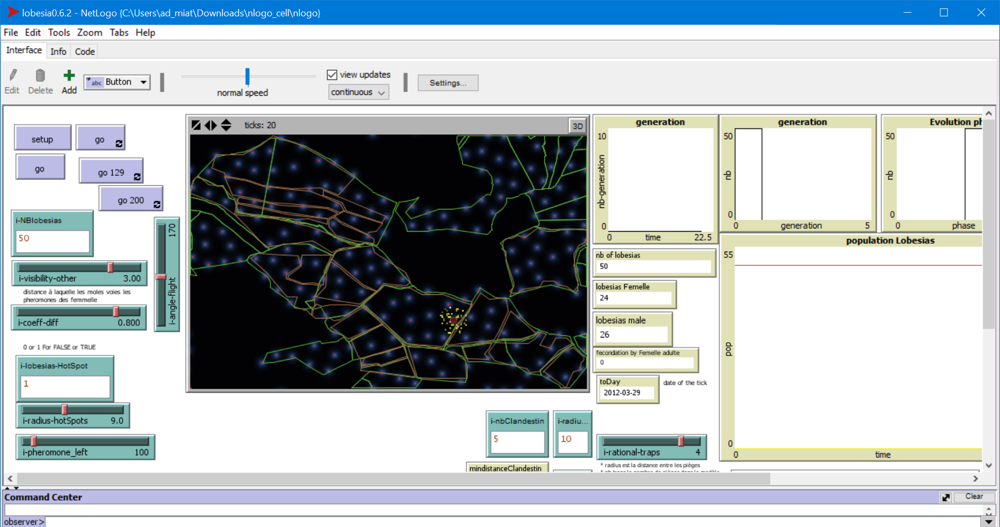Un modèle complexe
Les +
- Large communauté, très réactive (#stackoverflow)
- Primitive simple
Mais des limites...
- Passage à l’échelle (~ 300 000 agents)
- Interface "figée" (une seule fenêtre d’affichage)
- Environnement spatial « contraint »
- une seule grille
- pas de géométries pour les agents
Gama - skyrocket
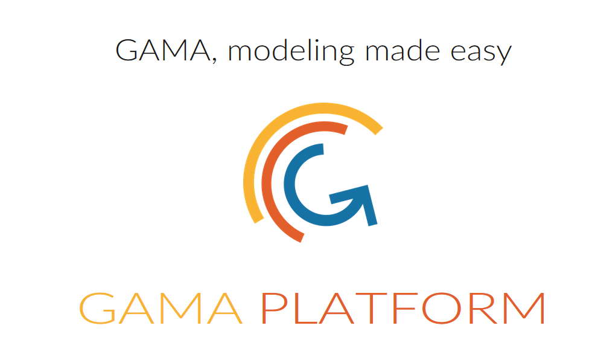- Puissant
- SIG facile à importer
- versatile = addaptable (multi-interface c.f. LittoSim)
- architecture modulaire (java)
Un environnement intégré
Coupler modélisation et simulation
Différentes topologies
Intégration de données spatiales
Modèles multi-niveaux
Différents formalismes
Reflexes, équations différentielles, machine à états finis, architecture cognitive (BDI)
Nombreux outils de visualisation
Affichage 3D (avec textures, lumières et cameras), par couche, nombreux types de graphiques (séries, histogramme, radar, heatmap…)
Des outils dédiés à la définition de jeux sérieux
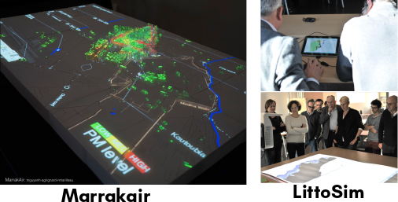Le Model CeLL dans GAMA?
C'est possibles ?
Le Model CeLL dans GAMA
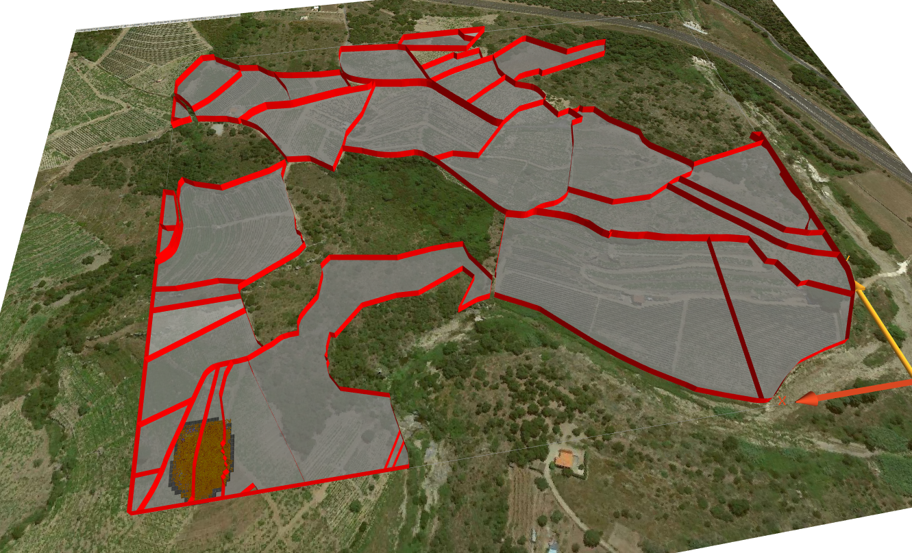Le Model CeLL dans GAMA en video
Quelques résultats
GAMA - temps d'execution
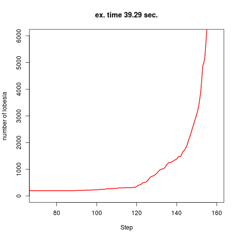Netlogo - temps d'execution
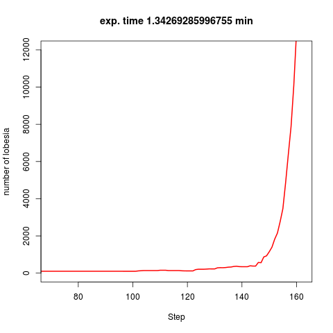Pomic ?
L'objectif était d'utiliser le package Pomic de R pour faire implementer le Pattern Oriented Modelling Information Criterion